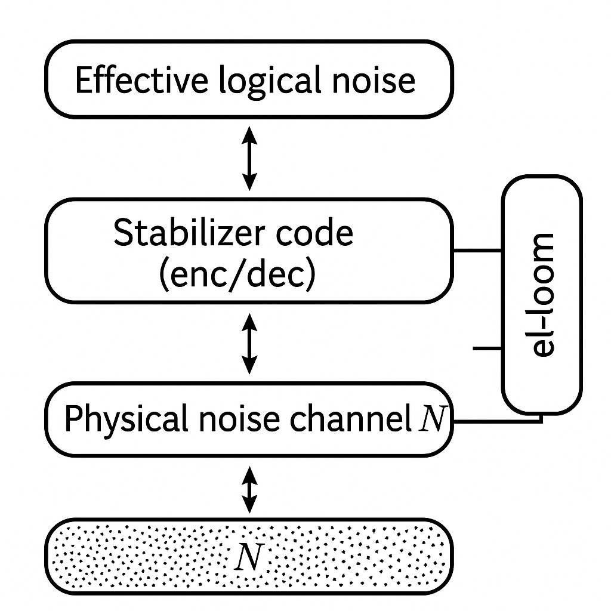
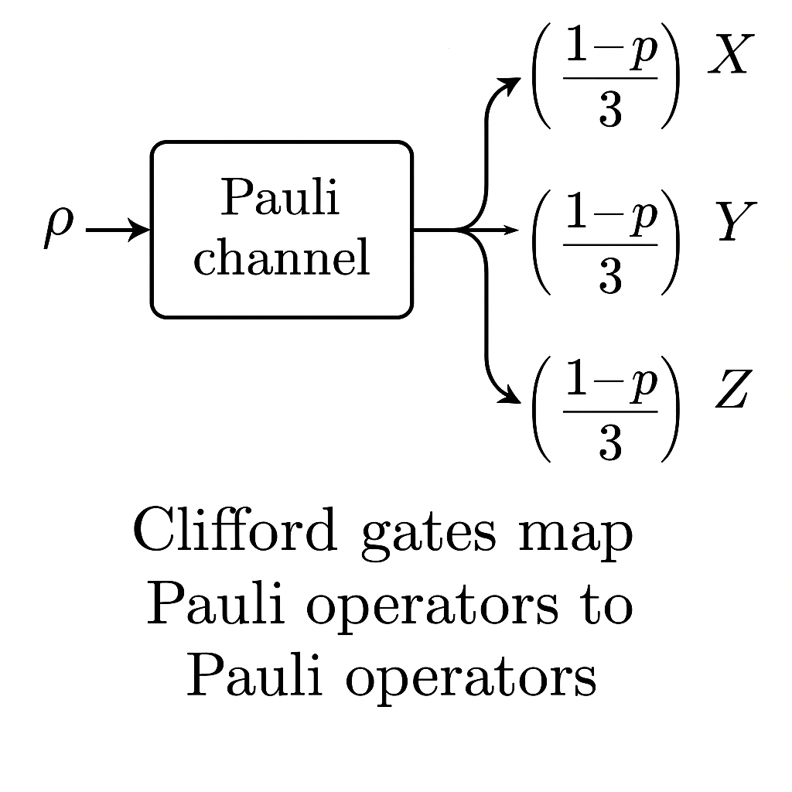
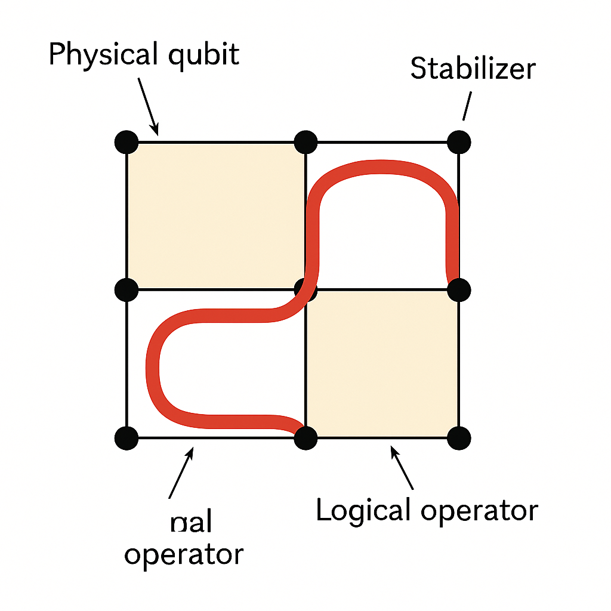
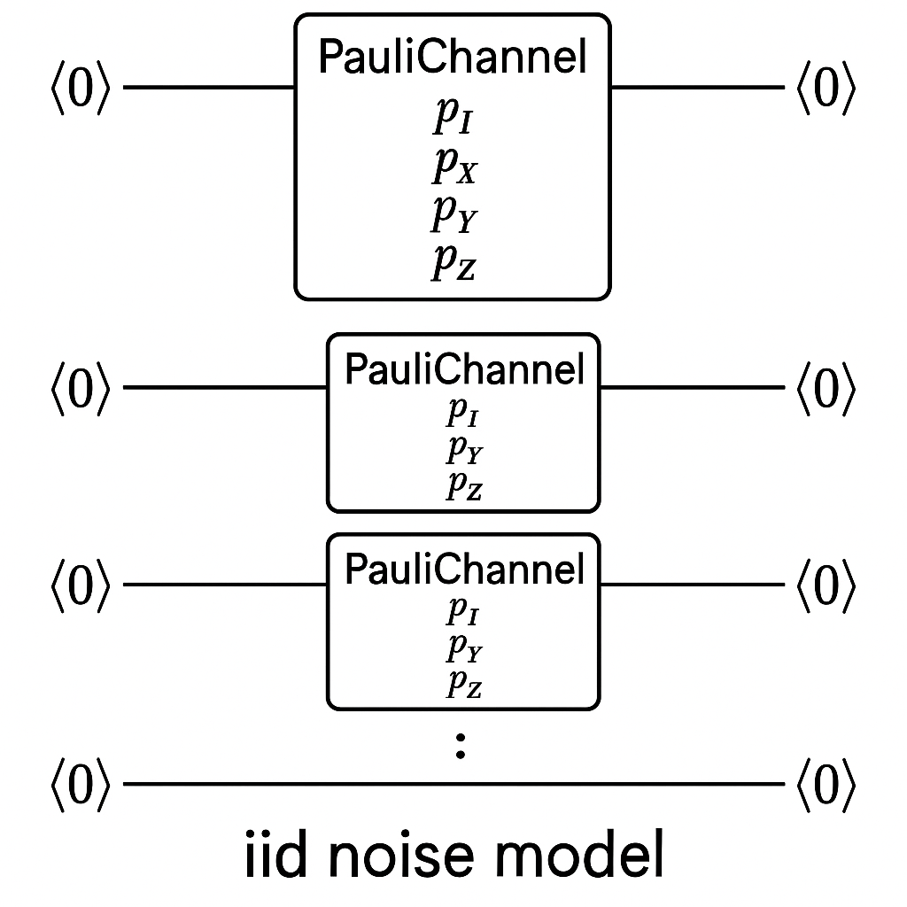
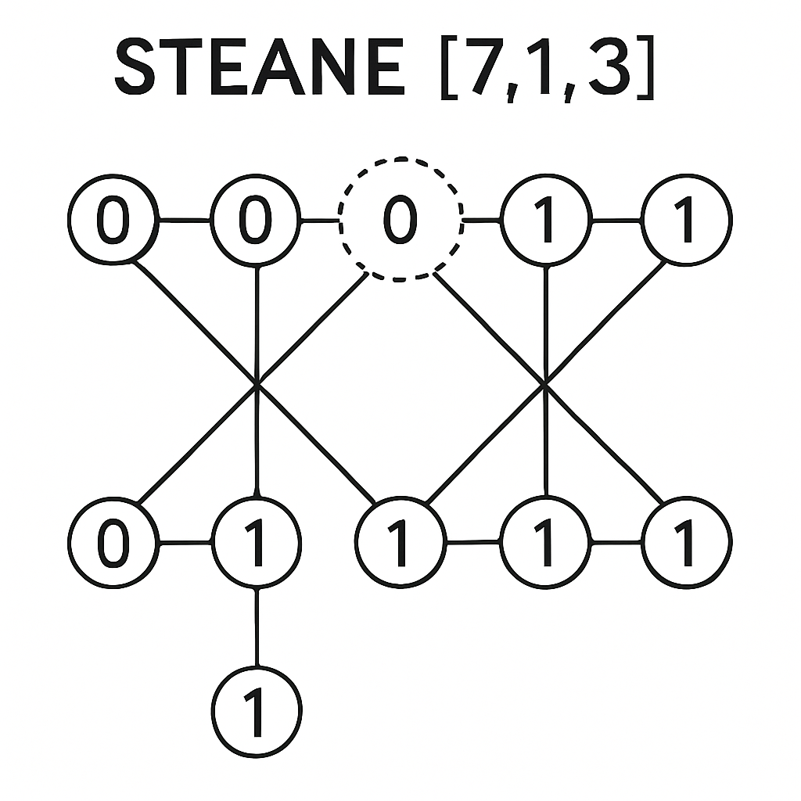
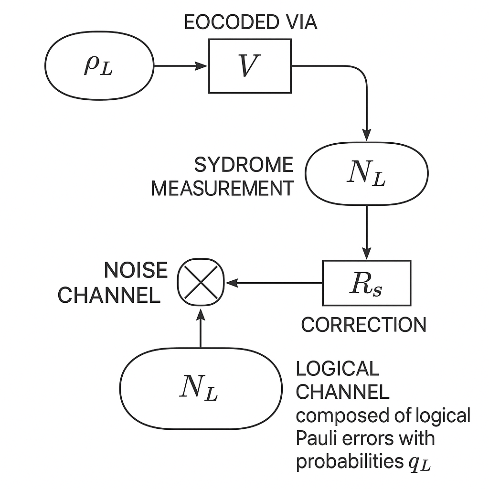
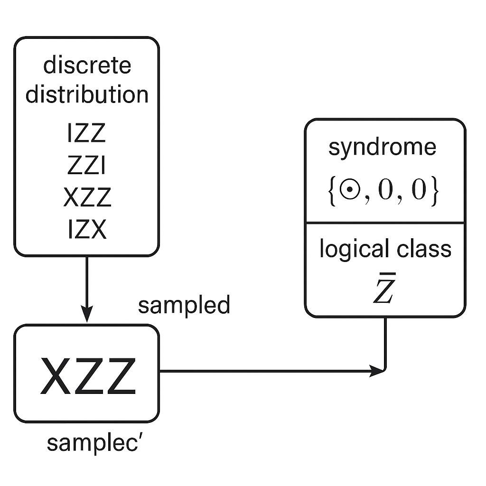
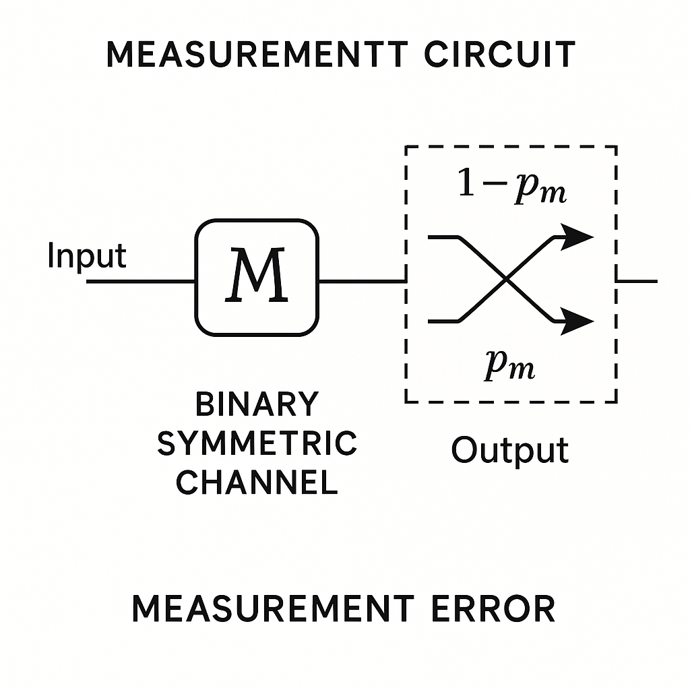
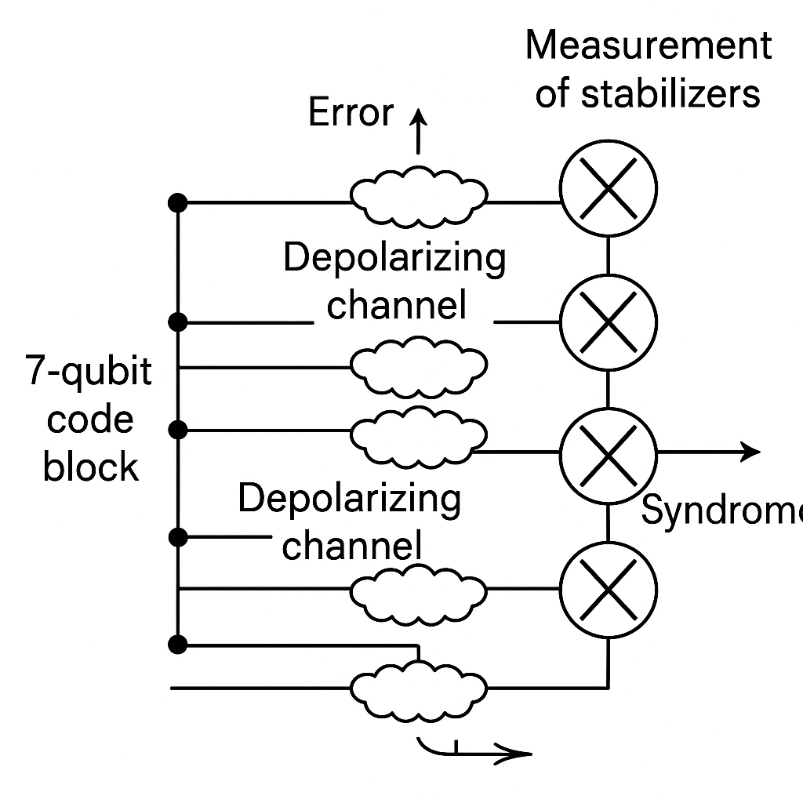
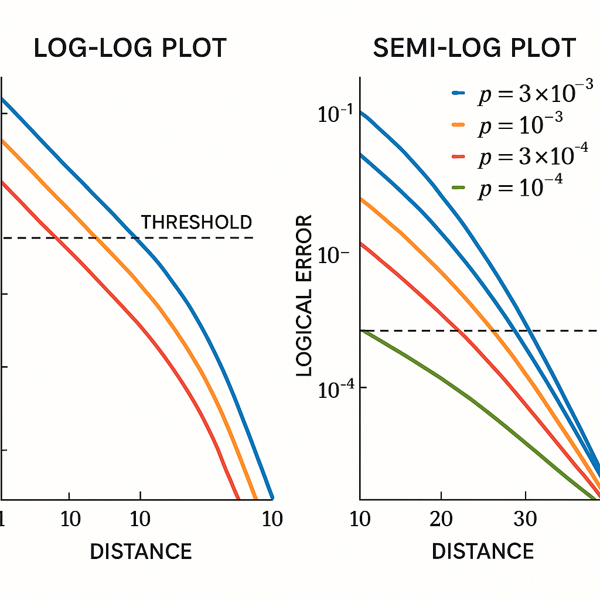

Generated by ChatGPT on 2025-12-01
本課程聚焦於如何在 Entropica Labs 的 el-loom 框架中，嚴謹且靈活地刻畫量子通道與穩定子碼上的物理噪聲。目標讀者為已熟悉基本量子資訊理論與量子糾錯（QEC）的博士生與研究者。
在實驗與理論量子糾錯研究中，我們常面對以下層級的建模問題：
el-loom 主要提供：
本節將從數學定義出發，逐步對接到 el-loom 的具體 API 與用法。

一個 \(n\) 量子位元系統的量子通道是作用在密度矩陣 \( \rho \in \mathcal{D}(\mathbb{C}^{2^n}) \) 上的線性映射 \[ \mathcal{N} : \mathcal{L}(\mathbb{C}^{2^n}) \to \mathcal{L}(\mathbb{C}^{2^n}) \] 滿足：
最常用的表示是 Kraus 展開： \[ \mathcal{N}(\rho) = \sum_{j} K_j \rho K_j^\dagger,\quad \sum_j K_j^\dagger K_j = I. \]
在 el-loom 中，通道通常會以更結構化形式（特別是 Pauli 通道）表示，以便與穩定子框架相容。
Pauli 群 \( \mathcal{P}_n \) 為 \[ \mathcal{P}_n = \{ \omega P_1\otimes\cdots\otimes P_n \mid P_i\in\{I,X,Y,Z\},\ \omega\in\{\pm 1,\pm i\} \}. \] 忽略相位，我們只關心 \( n \)-qubit Pauli 字串 \[ P = P_1\otimes\cdots\otimes P_n,\quad P_i\in\{I,X,Y,Z\}. \]
Pauli 通道是指形如 \[ \mathcal{N}(\rho) = \sum_{P\in\mathcal{P}_n/\{\pm 1,\pm i\}} p_P\,P \rho P^\dagger, \quad p_P \ge 0,\quad \sum_P p_P = 1. \] 這包含了許多重要模型，如：
對穩定子碼而言，Pauli 通道特別重要，因為 stabilizer formalism 對 Pauli 誤差具有閉包性與可追蹤性：Pauli 誤差與 Clifford 閘互動後仍是 Pauli 誤差。

實務上，物理噪聲不一定是 Pauli 型，但在穩定子碼分析中，我們常使用 Pauli twirling 近似：
\[ \mathcal{N}_\text{twirl}(\rho) = \frac{1}{|\mathcal{P}_n|}\sum_{P\in \mathcal{P}_n} P^\dagger\,\mathcal{N}(P\rho P^\dagger)\,P. \]
可證明 \( \mathcal{N}_\text{twirl} \) 仍為 CPTP，且在 Pauli 基底下對角化，變成一個 Pauli 通道。這在 el-loom 中可以由使用者先在分析層完成，再以 Pauli 通道輸入模擬引擎。
一個 \([[n,k,d]]\) 穩定子碼由一個 Abelian 子群 \[ \mathcal{S} \subset \mathcal{P}_n \] 所定義，滿足：
給定一組獨立穩定子生成元 \( \{ S_1,\dots,S_{n-k} \} \)，任何誤差 \(E\in\mathcal{P}_n\) 在碼空間上的作用將由其與穩定子的對易/反對易關係決定。
對 syndromes 向量 \( s(E) \in \mathbb{F}_2^{n-k} \)： \[ s_i(E) = \begin{cases} 0, & [E,S_i]=0,\\ 1, & \{E,S_i\}=0, \end{cases} \quad i=1,\dots,n-k. \]
邏輯 Pauli 算符 \( \overline{X}_j, \overline{Z}_j \in \mathcal{P}_n \) 滿足：
碼距離 \(d\) 定義為： \[ d = \min_{L\in\mathcal{L}\setminus\{I\}} \mathrm{wt}(L), \] 其中 \(\mathcal{L}\) 為邏輯 Pauli 群，\(\mathrm{wt}(\cdot)\) 為 Pauli 字串的 Hamming weight。

若物理噪聲為 Pauli 通道 \[ \mathcal{N}(\rho) = \sum_{E\in\mathcal{P}_n} p_E\, E\rho E, \] 假設初始狀態 \( \rho \) 在碼空間 \(\mathcal{C}\) 內。測量所有穩定子生成元（或對應之 syndrome qubits）後，得到 syndrome \( s\in\mathbb{F}_2^{n-k} \) 的機率為： \[ \Pr[s] = \sum_{E : s(E) = s} p_E. \] 條件在 syndrome \( s \) 下的未歸一化後驗狀態： \[ \rho_s' \propto \sum_{E : s(E)=s} p_E\, E\rho E. \]
若我們只關心邏輯資訊，可以將所有相差穩定子的誤差等同視為同一「邏輯誤差類別」：
\[
E \sim E' \iff E'E^{-1} \in \mathcal{S}.
\]
在每一個 syndrome \( s \) 下，對邏輯誤差類的後驗分佈就是解碼演算法的輸入；el-loom 可以生成這些 syndrome 分佈與對應的錯誤樣本。
本節將示範如何使用 el-loom（Python 介面）來刻畫物理噪聲通道，並準備好應用到穩定子碼。
pip install el-loomfrom loom import channels, noise, codes, simulate
注意：實際模組名稱與結構請以官方文件為準（ loom-api-docs ）。以下示例採用典型命名風格，重點在概念與 workflow。
假設我們要定義單量子位的 Pauli 通道
\[
\mathcal{N}(\rho)
= p_I \rho + p_X X\rho X + p_Y Y\rho Y + p_Z Z\rho Z,
\quad p_I + p_X + p_Y + p_Z = 1.
\]
在 el-loom 中可用類似：
from loom.channels import PauliChannel
# 定義單 qubit Pauli 通道
p_I, p_X, p_Y, p_Z = 0.97, 0.01, 0.01, 0.01
single_qubit_pauli = PauliChannel.from_probs({
"I": p_I,
"X": p_X,
"Y": p_Y,
"Z": p_Z,
})
若要將此通道延伸成 \(n\) qubits 上的獨立同分布通道，可以使用 tensor product 或 iid 建構子：
n = 7
iid_noise = single_qubit_pauli.iid(num_qubits=n)
# or:
# iid_noise = channels.tensor_product(single_qubit_pauli, n)

許多常見噪聲模型在 el-loom 中通常已有預設工廠方法，例如：
from loom.channels import DepolarizingChannel, AmplitudeDampingChannel
p = 0.02
depol = DepolarizingChannel(p=p)
gamma = 0.005
amp_damp = AmplitudeDampingChannel(gamma=gamma)
如前所述，若要與穩定子碼分析結合，通常需要執行 Pauli twirling 或用近似的 Pauli channel 取代；
el-loom 有些版本提供將一般通道「Pauli 化」的工具（例如 to_pauli_channel），可參考 API 文件。
對於自定義通道，可直接指定 Kraus operators：
\[ \mathcal{N}(\rho) = \sum_j K_j \rho K_j^\dagger,\quad \sum_j K_j^\dagger K_j = I. \]import numpy as np
from loom.channels import KrausChannel
# 例如：任意的兩 qubit 通道
K0 = np.eye(4) * np.sqrt(0.9)
K1 = np.kron(np.array([[0, 1],[0, 0]]), np.eye(2)) * np.sqrt(0.1)
custom_kraus_channel = KrausChannel([K0, K1])
注意：此類一般通道若要與穩定子碼模擬結合，通常需要進一步處理（Pauli decomposition / twirling），否則難以在大規模系統上高效模擬。
el-loom 提供常見穩定子碼的工廠函式，例如 \([[5,1,3]]\) perfect code、Steane code、surface code 等。範例（具體名稱請以文件為準）：
from loom.codes import SteaneCode
code = SteaneCode() # [[7,1,3]] code
print(code.n_qubits, code.k_logical)
print(code.stabilizers) # list of Pauli strings
print(code.logical_ops) # dictionary for logical X,Z...
code.stabilizers 可能會以 Pauli 字串或 symplectic 向量形式存在，如：
"XZZXIII" 等。
若要自訂碼，可透過明示穩定子生成元與邏輯算符（或由程式自動推導邏輯算符）。概念上：
from loom.codes import StabilizerCode
stabilizers = [
"XXXXIIII", # for example
"ZZZZIIII",
# ...
]
logical_ops = {
"X_logical": "XIIIXII",
"Z_logical": "ZIIIZII",
}
my_code = StabilizerCode(
stabilizers=stabilizers,
logical_ops=logical_ops,
)
在數學上，這相當於指定 \( \mathcal{S} \subset \mathcal{P}_n \) 與一組生成 \(\mathcal{L}\) 的邏輯算符。el-loom 通常會內部轉成 symplectic representation，以支援高效的 Pauli 操作與 Clifford 模擬。
穩定子碼可視為一個 isometry \[ V: \mathbb{C}^{2^k} \to \mathbb{C}^{2^n}, \] 滿足 \[ V^\dagger S V = I,\ \forall S\in\mathcal{S}, \] 且邏輯算符在碼空間上的實現為 \[ \overline{X}_j = V X_j V^\dagger,\quad \overline{Z}_j = V Z_j V^\dagger. \]
在 el-loom 中，通常不會顯式建構 \(V\)，而是透過 stabilizers 與 logical operators 來隱含這個編碼映射。對於模擬而言，最關鍵的是：如何將物理誤差 \(E\) 映射為 syndrome \(s(E)\) 與邏輯誤差類 \(\ell(E)\)，而不是明確的 \(E\)-在-\(V\) 上的 conjugation。
考慮下列流程（單輪 error-correction cycle）：
組合起來可視為邏輯通道： \[ \mathcal{N}_L = \mathrm{Tr}_\mathrm{anc} \circ \mathcal{R} \circ \mathcal{N} \circ \mathcal{E}, \] 其中編碼通道可寫成 CPTP 形式 \[ \mathcal{E}(\rho_L) = V\rho_L V^\dagger. \]
若噪聲為 Pauli 通道 \[ \mathcal{N}(\rho) = \sum_{E\in\mathcal{P}_n} p_E\, E\rho E, \] 則在編碼狀態上： \[ \mathcal{N}(V\rho_L V^\dagger) = \sum_E p_E\, E V\rho_L V^\dagger E. \]
測量 syndrome 等價於將 \(E\) 分類依據 syndrome \(s(E)\)。收集所有同一 syndrome 的項，可得 \[ \mathcal{N}(V\rho_L V^\dagger) = \sum_s \sum_{E : s(E)=s} p_E\, E V\rho_L V^\dagger E. \]
假設恢復映射 \( \mathcal{R} \) 是 syndrome 相依的 Cliffords 或 Pauli 校正 \(R_s\)，即 \[ \mathcal{R}(\cdot) = \sum_s R_s \Pi_s (\cdot) \Pi_s R_s^\dagger, \] 其中 \( \Pi_s \) 為對應 syndrome 子空間的投影。則對每個 syndrome \(s\)：
\[ \rho_{L,s}' \propto V^\dagger R_s \Bigl( \sum_{E: s(E)=s} p_E\, E V\rho_LV^\dagger E \Bigr) R_s^\dagger V. \]若 \(R_s\) 能將大部分 syndrome class 糾回碼空間，我們可以寫成邏輯誤差算符： \[ R_s E V = V L_{s,E}, \] 其中 \(L_{s,E}\in\mathcal{L}\) 為某個邏輯 Pauli。代入得： \[ \rho_{L,s}' \propto \sum_{E : s(E)=s} p_E\, L_{s,E}\rho_L L_{s,E}. \]
因此，對給定 syndrome \(s\)，條件邏輯通道為一個 Pauli 通道 \[ \mathcal{N}_{L|s}(\rho_L) = \sum_{L\in\mathcal{L}} q_{L|s}\, L\rho_L L, \] 其中 \[ q_{L|s} = \frac{1}{\Pr[s]} \sum_{E: s(E)=s,\, L_{s,E}=L} p_E. \] 如果我們忽略 syndrome，則整體邏輯通道為 \[ \mathcal{N}_L(\rho_L) = \sum_s \Pr[s]\mathcal{N}_{L|s}(\rho_L) = \sum_L q_L\, L\rho_L L, \] 其中 \[ q_L = \sum_s \Pr[s] q_{L|s} = \sum_E p_E \,\mathbf{1}[L_{s(E),E}=L]. \]
這些邏輯錯誤機率 \(q_L\) 與 syndrome 分佈 \( \Pr[s] \) 可以透過數值模擬估計——這正是 el-loom 提供的關鍵功能之一。

典型的 el-loom 工作流程包括：
code。noise_model（多為 Pauli 通道）。概念性程式碼（實際 API 請查官方文件）：
from loom.codes import SteaneCode
from loom.channels import PauliChannel
from loom.simulate import run_qec_cycle
code = SteaneCode()
# 定義單 qubit pauli noise
pI, pX, pY, pZ = 0.97, 0.01, 0.01, 0.01
single_qubit_pauli = PauliChannel.from_probs({
"I": pI, "X": pX, "Y": pY, "Z": pZ,
})
noise_model = single_qubit_pauli.iid(num_qubits=code.n_qubits)
# 執行多次 QEC cycle 模擬
num_shots = 100000
stats = run_qec_cycle(code=code, noise=noise_model, shots=num_shots)
print("Logical error rate:", stats.logical_error_rate)
print("Syndrome histogram:", stats.syndrome_counts)
在背後，run_qec_cycle 類函式會：
對 Pauli 通道 \[ \mathcal{N}(\rho) = \sum_{P} p_P P\rho P, \] 若我們只想模擬 syndrome 與邏輯錯誤率，而不顯式追蹤狀態 \(\rho\)，可使用「error sampling」策略：
這是標準穩定子模擬框架中的關鍵效率來源。el-loom 內部會使用 symplectic operations 來計算 \(s(P)\) 與 \(L(P)\)，而不需要矩陣乘法。

若要模擬多輪 QEC（例如 \(T\) 個循環）：
\[ (\mathcal{R}\circ\mathcal{N})^T = \underbrace{\mathcal{R}\circ\mathcal{N}\circ\cdots\circ\mathcal{R}\circ\mathcal{N}}_{T\ \text{times}}. \]
在 el-loom 中，可以：
noise 指定為每一輪的物理噪聲（可隨時間變化）。run_qec_cycle 或一個 multi-round API。程式架構示意：
T = 50 # number of QEC rounds
logical_error_events = 0
state = code.init_logical_state("0") # abstract handle, not full statevector
for t in range(T):
result = run_qec_cycle(
code=code,
noise=noise_model, # could be time-dependent noise[t]
state=state,
)
state = result.state # logical state + Pauli frame
if result.logical_error_occurred:
logical_error_events += 1
logical_error_rate_per_cycle = logical_error_events / (num_shots * T)
實際上，state 通常是以「Pauli frame + syndrome history」的形式存在，而不是 \(2^n\) 維密度矩陣。
在實驗設計中，更自然的模型是「每個閘門具有獨特的噪聲 channel」：
在 Clifford + Pauli 噪聲情境下，常見的建模方式是：
\[ \mathcal{U}_G(\rho) = U_G \rho U_G^\dagger,\quad \mathcal{N}_G(\rho) = \sum_P p_{G,P} P\rho P, \] 總通道為 \[ \mathcal{E}_G = \mathcal{N}_G\circ\mathcal{U}_G. \]
el-loom 通常會有「noisy gate」或「noisy circuit」的描述介面，例如：
from loom import circuits, noise
# 建立一個 Clifford circuit for syndrome extraction
qc = circuits.StabilizerCircuit(code)
# 為特定 gate type 指定 noise model
gate_noise = {
"H": DepolarizingChannel(p=0.001),
"CNOT": PauliChannel.from_probs({...}),
}
noisy_qc = noise.attach_gate_noise(qc, gate_noise)
量測噪聲可建模為：
在 syndrome 量測中，量測誤差會導致 syndrome bit 被翻轉。el-loom 中可:
meas_error_prob = 0.02
# 假設我們有 syndrome measurement circuit qc
noisy_meas = noise.add_measurement_bitflip(qc, p=meas_error_prob)

在更多物理實際的模型中，噪聲具有空間相關性（例如距離相近 qubit 有相關 dephasing）與時間相關性（例如 \(1/f\) 雜訊）。在 el-loom 架構內，可以透過：
例如：雙體 correlated dephasing \[ \mathcal{N}(\rho) = (1-p)\rho + p Z_i Z_j \rho Z_i Z_j. \]
from loom.channels import PauliChannel
# correlated ZZ error on qubits (i, j)
p = 0.001
correlated_zz = PauliChannel.from_probs({
"I" * n: 1 - p,
"I" * i + "Z" + "I" * (j - i - 1) + "Z" + "I" * (n - j - 1): p,
})
本節將具體示範如何在 el-loom 中建構「Steane 碼 + i.i.d. depolarizing noise」，計算 syndrome 分佈與邏輯錯誤率。
Steane \([[7,1,3]]\) 碼，假設每個物理 qubit 在每一個 QEC 週期經歷單步 depolarizing noise： \[ \mathcal{D}_p(\rho) = (1-p)\rho + \frac{p}{3}\left(X\rho X + Y\rho Y + Z\rho Z\right). \] 整體噪聲為 \[ \mathcal{N} = \mathcal{D}_p^{\otimes 7}. \]
根據距離 \(d=3\)，此碼可以糾正所有 weight \(\le 1\) 的 Pauli 誤差。對小 \(p\) 下，主要邏輯錯誤來自 weight-2 與 weight-3 誤差。邏輯錯誤率約為 \(O(p^2)\)。

from loom.codes import SteaneCode
from loom.channels import DepolarizingChannel
from loom.simulate import run_qec_cycle
import numpy as np
# 1. 定義碼
code = SteaneCode()
# 2. 定義物理噪聲 (i.i.d depolarizing)
p = 0.01
single_qubit_depol = DepolarizingChannel(p=p)
noise_model = single_qubit_depol.iid(num_qubits=code.n_qubits)
# 3. 多次模擬 QEC 週期
shots = 200000
stats = run_qec_cycle(code=code, noise=noise_model, shots=shots)
# 4. 統計結果
logical_X_rate = stats.logical_error_rate["X_logical"]
logical_Z_rate = stats.logical_error_rate["Z_logical"]
logical_Y_rate = stats.logical_error_rate["Y_logical"]
print("Logical X error rate:", logical_X_rate)
print("Logical Z error rate:", logical_Z_rate)
print("Logical Y error rate:", logical_Y_rate)
# Syndrome 分佈
for syndrome, count in stats.syndrome_counts.items():
print(syndrome, count / shots)
在數學上，我們期待（對小 \(p\)）：
因此邏輯錯誤率約為
\(L\) 大約等於常數 \(C\) 乘上 \(p\) 的平方。-->\[
p_L \approx C \, p^2
\]
其中 \(C\) 取決於碼的結構與糾錯策略。透過 el-loom 模擬，我們可數值估計 \(C\)。
若我們將 stats.syndrome_counts 做歸一化，就得到 syndrome 分佈
\[
\hat{\Pr}[s] = \frac{\mathrm{count}(s)}{\mathrm{shots}}.
\]
對於每個 syndrome \(s\)，可再細分邏輯誤差類別：
\[
\hat{q}_{L|s}
= \frac{\mathrm{count}(L,s)}{\mathrm{count}(s)}.
\]
這些資訊可以用來實作最大似然（ML）解碼器，或作為 machine-learning 解碼器的訓練資料。el-loom 提供直接/間接地輸出 syndrome-邏輯錯誤對的功能，使得研究者可輕鬆從「物理噪聲模型」走到「解碼器行為」。
給定一個 \([[n,k,d]]\) 碼與物理噪聲 \( \mathcal{N} \)，我們可以（理論上）求得完整邏輯通道 \(L\) 冒號，從 \(\mathcal{L}\) 括號裡面是 \(\mathbb{C}\) 的二的 k 次方維，映到 \(\mathcal{L}\) 括號裡面是 \(\mathbb{C}\) 的二的 k 次方維。-->\[ \mathcal{N}_L: \mathcal{L}(\mathbb{C}^{2^k}) \to \mathcal{L}(\mathbb{C}^{2^k}), \] 其 Pauli representation： \[ \mathcal{N}_L(\rho_L) = \sum_{L,L'} \chi_{L,L'} L\rho_L L'. \] 對穩定子碼與 Pauli 噪聲，\(\chi\) 通常是對角的： \[ \mathcal{N}_L(\rho_L) = \sum_{L} q_L L\rho_L L. \]
在實務上，我們以 Monte Carlo 估計 \(q_L\)。el-loom 可讓使用者：
在量子糾錯中，閾值（threshold） 指存在一個臨界物理錯誤率 \(p_\mathrm{th}\)，使得當 \(p < p_\mathrm{th}\) 時，隨碼距離 \(d\) 增加，邏輯錯誤率可指數下降。一般預期 \[ p_L(d, p) \sim \exp\left(-\alpha(p)\,d\right),\quad p<p_\mathrm{th}, \] 而 \( \alpha(p) \to 0 \) 當 \(p\to p_\mathrm{th}^- \)。
在 el-loom 中，可對一族碼（例如 surface codes with distance \(d=3,5,7,\dots\)）與各種 \(p\) 值進行系統模擬：
distances = [3,5,7,9]
ps = np.linspace(0.005, 0.02, 8)
data = []
for d in distances:
code = SurfaceCode(distance=d)
for p in ps:
noise_model = DepolarizingChannel(p=p).iid(num_qubits=code.n_qubits)
stats = run_qec_cycle(code=code, noise=noise_model, shots=50000)
pL = stats.logical_error_rate["Z_logical"] # for example
data.append((d, p, pL))
接著可在 Python 中做 fitting，用於估計 threshold 及 scaling exponent。此類統計分析與物理噪聲模型的精緻建模息息相關，也是 el-loom 設計的主要應用場景。

本課中，我們從數學角度嚴謹地推導了：
el-loom 中定義噪聲模型、穩定子碼，並執行 QEC 週期模擬。對於進一步研究與實作，可考慮以下方向：
el-loom 中實作並做 threshold 分析。el-loom 做碼設計與參數優化。el-loom 裡套用學得的噪聲模型進行 QEC 評估。
掌握這些技巧後，讀者即可使用 el-loom 作為完整的「從物理噪聲到穩定子碼性能」的實驗與理論研究平台，實現高度可重現、可擴展的量子糾錯模擬工作流程。
逐字稿下載：ChatGPT_zh_L02_穩定子碼與通道建模_在_el_loom_中刻畫物理噪聲.txt
完整音檔：
Segment 1:
Segment 2:
Segment 3:
Segment 4:
Segment 5:
Segment 6:
Segment 7:
Segment 8:
Segment 9:
Segment 10:
Segment 11:
Segment 12:
Segment 13:
Segment 14: